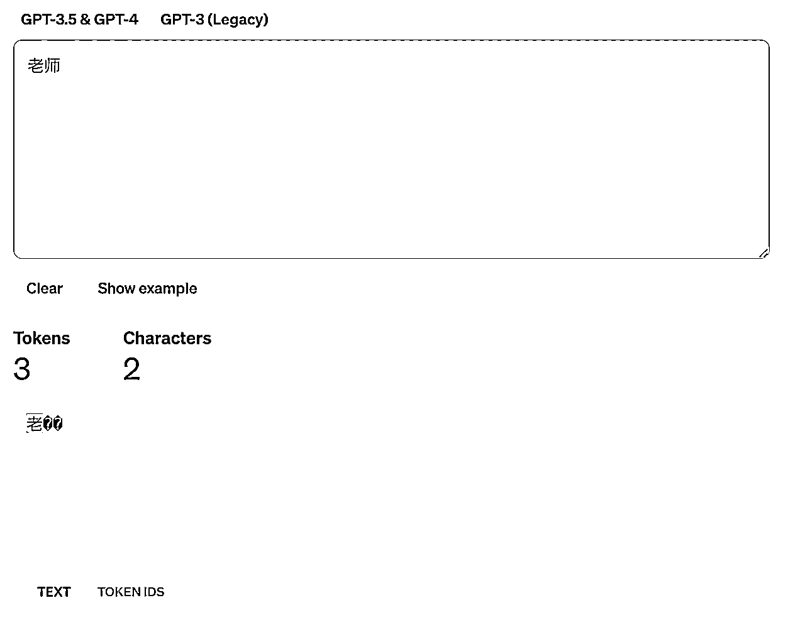
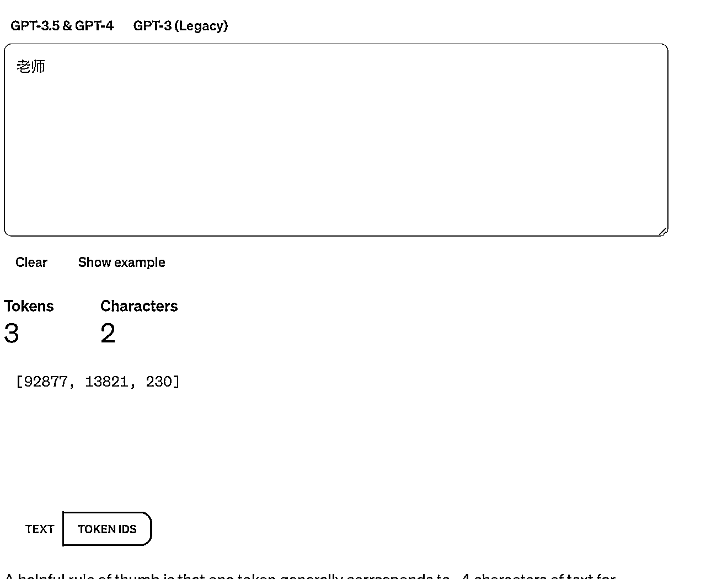
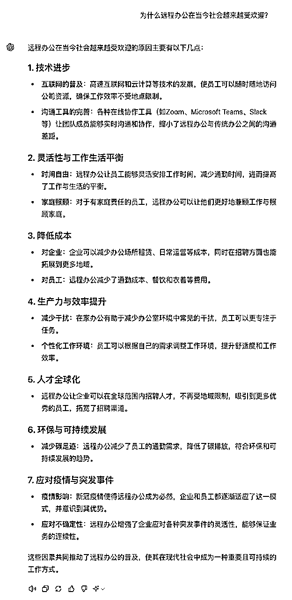

来源：https://eqsdsj0h4eo.feishu.cn/docx/MQKHd1ScOoKFyJxexdncJyuPnuh
在我们与 GPT 的互动中，"Prompt"是一个非常重要的概念。无论是在使用聊天机器人、进行创意写作，还是在其他 AI 应用中，了解什么是 Prompt 以及它如何工作，对于有效地使用 AI 技术至关重要。
Prompt 是一种指令或信息，它引导或触发 AI 系统做出回应。在与 AI 如 ChatGPT 的交互中，每当我们输入一段文字，无论是问题、命令还是陈述，这段文字就是一个 Prompt。
想象 AI 是一位知识渊博的朋友，拥有广泛的信息和技能。当你与她对话时，你提出的每个问题或评论（即“Prompt”）都是对话的一部分。
比如，你可能会问她：“你对最近的科技发展有什么看法？”或者说：“请帮我概括一下太阳能的工作原理。”在这个情境中，每个问题或请求都是一个“Prompt”，引导你的朋友（AI）提供相关的信息、观点或执行特定的任务。
就像在与人的交谈中一样，你的“Prompt”的质量和清晰度将直接影响到对方的回应。清晰具体的问题会得到更精确和有用的答复。
如果你的问题模糊不清，你的朋友可能会需要更多的信息来提供有用的答案。同样，当你给 AI 一个清晰、明确的“Prompt”时，它可以更有效地理解你的请求并给出更准确的回应。
新版本点击最右边，有执行分析步骤，很人性化：
这类的目前 GPT 还无法实现此功能。但是已经有可以实现的了比如：Pika，Pixverse，以及现在特别火的 Sora 也是。
在我们开始探索 GPT 的世界之前，让我们先来了解一下什么是“token”。这个概念对于理解 GPT 至关重要。
想象一下，你正在阅读一本书，但是这本书的每个字都是单独剪切出来的。在 GPT 的世界里，这些单独的字就像是“token”。
简单来说，token 是将文本分割成更小部分的一种方式。这些小部分可以是单个字、词或者短语。就像搭积木一样，GPT 通过这些 tokens 来理解和生成语言。
GPT 实际是将我们输入的文字转换成 token，然后通过 GPT 模型预测需要输出的 token，最后再将 token 转换成文字，然后再输出给我们。
也就是说 GPT 只能理解 token，所以 GPT 会转化一下。
在 GPT 中使用的 Token 类型与传统 自然语言处理 中的字级 Token 、词级 Token 和子词 Token 的概念有所不同（这里感谢小七姐的指正，之前我误以为 GPT 的 Token 是三种）。
GPT 使用基于 BPE 算法 的 Tokenization 方法，实际上较复杂，感兴趣的可以跳转：https://zhuanlan.zhihu.com/p/620426699
因为是入门的科普，这里进行简化理解，可以简单按照 自然语言处理 中的分类来理解（但实际上不是，这里大家一定要注意）：
可以看到上面每一个汉字都是一个 Token。
中国虽然是两个汉字，但是是一个 Token。
上面（ red）空格+red 四个字符算作一个 token

上面虽然是两个汉字，但是拆解下来是 3 个 token，因为 “师” 被算为两个 token 的组合。

那么 token 到底有什么用呢？我们为什么需要知道这些？
首先这里给大家一个 token 简单转化关系为：100 tokens ～= 75 单词 或者 ～= 100 个汉字。
首先 OpenAI token 的计算包含两部分。用户输入给 GPT 模型的 token 数和 GPT 模型生成返回文本的 token 数。
例如，你提问耗费了 100 token（约 100 个汉字），GPT 根据你的输入，生成文本（也就是回答）了 200 token（约 200 个汉字），那么一共消费的 token 数就是 300 。
首先看下 GPT-3.5 和 GPT-4.0 两个模型对应的支持最大的 tokens 数据：
官网地址：https://platform.openai.com/docs/models/gpt-4-and-gpt-4-turbo
GPT-3.5 的 token 的限制大约在 4096 左右，大约相当于 3072 个英文单词，或者 4096 左右个汉字 。
GPT-4 的 token 的限制大约在 8192 左右，大约相当于 6144 个英文单词，或者 8192 左右个汉字 。
当对话的长度超过模型的最大 token 限制时，模型会开始"忘记"之前的对话内容。这是因为模型无法同时保留超过其最大 token 数量的信息。
在实践中，这意味着模型会丢弃较早的部分对话内容，以便为新的输入腾出空间。
例如，想象一个小孩子在听一个很长的故事。如果故事非常长，孩子可能会忘记故事开始时的内容。同样，当对话长度超过了模型的处理能力时，模型就会像孩子一样忘记对话的早期部分。
这种现象在长对话或复杂交互中尤其明显。因此，对话的管理和结构对于保持连贯性和相关性非常重要。
官网地址：https://platform.openai.com/tokenizer
上图文字我专门去除了英文，可以看出来，基本上是 1 比 1，我输入的有 331 个汉字，转换消耗 tokens 为 337 个 token。
再看下英文的情况：
上图我大概输入了 700 个字母，算出来有 149 个 token，大约就是 4 个字母 ～= 一个 token。
Token 限制对提示词编写有显著影响，特别是在长对话或连续多轮对话中。理解并考虑到 token 限制可以帮助有效地管理和构建对话，以下是一些具体的影响：
1. 有效记忆长度的把握：了解模型的 token 限制有助于预测和控制对话的有效记忆长度。这意味着在长对话中，你会意识到模型可能会忘记早期的交流内容。因此，避免在超过 token 限制时继续提问与最初的问题相关的内容，因为模型可能已经"忘记"了这些信息。
2. 简洁明了的表达：基于奥卡姆剃刀原理（即在解释事物时不应不必要地增加更多假设），建议在对话中使用简洁、直接的表达方式。这意味着避免冗长或不必要的话语，以减少 token 的消耗，并保持对话的清晰和焦点。
3. 重要信息的重复：在连续多轮对话中，如果某些信息非常重要，可以在不同时间点简要重复这些信息，以帮助模型保持对重要细节的记忆，特别是在长对话中。
4. 合理分段：在长文本或复杂问题的情况下，合理分段信息可以帮助模型更有效地处理和回应。这可以通过分解长问题或在长对话中定期总结已讨论的要点来实现。
GPT 是一个基于大量数据训练的 AI 模型。它通过分析过去的数据来生成回答，但是，这个模型不能实时更新，这意味着它的知识是停留在某个特定时间点的。
通过询问 GPT 可以得知具体时间，那么 GPT 就不会 2023 年 4 月之后发生的事件。
所以当你问 GPT 一些关于最新新闻、流行文化或最近的科技发展的问题时，它无法提供最新的信息。它的回答可能基于过时的数据，这有时会导致误解或不准确的信息。
那我们怎么做呢？
但是需要注意一点，就是这些信息，其实是通过内置的上网功能实时的获取数据，展示出来的而已。
这意味着什么呢？也就是说，GPT 训练库里面没有使用最新的数据进行训练。
我们来看看，GPT 是如何回答这个问题的：
那么我们最后再来看看，两种回复内容的本质区别：
所以，大家应该清楚了，时效性问题，到底会导致 GPT 回复的内容对我们的影响了吧。
幻觉问题是指 GPT 在处理信息时可能产生的误解或错误。这种情况通常发生在 GPT 尝试理解复杂的概念、模棱两可的问题或非常新颖的话题时。
由于 GPT 是通过分析大量的文本数据训练出来的，它有时会“误解”这些数据或“过度推断”，从而产生不准确或虚构的回答。
定义：当模型生成的文本不遵循原文（Faithfulness）或者不符合事实（Factualness），我们就可以认为模型出现了幻觉的问题。
我们看下这个幻觉问题：
1）GPT 缺乏相关知识或内化错误知识
GPT 有时会将虚假的相关性（如位置接近或高度共现的关联）误解为事实知识，即 GPT 的幻觉与训练数据的分布之间存在很强的相关性。
2）GPT 有时会高估自己的能力
一些研究旨在了解语言模型是否能够评估其回答的准确性并识别其知识边界。然而，对于非常大的 GPT 来说，正确答案和错误答案的分布熵可能是相似的，这表明 GPT 在生成错误答案时与生成正确答案时同样自信。
3）有问题的对齐过程可能会产生幻觉
如果 GPT 在预训练阶段没有获得相关的先决知识，那么在训练指令时，这实际上是一个错误的对齐过程，会促使 GPT 产生幻觉。
另一个潜在问题是"谄媚"（sycophancy），即 GPT 可能会生成偏向用户观点的回答，而不是提供正确或真实的答案，这可能会导致幻觉
4）GPT 采用的生成策略存在潜在风险
但是，即使 GPT 意识到自己的早期错误是正确的，它们有时也会过度承诺。换句话说，GPT 可能更喜欢用“滚雪球”来实现自我一致性，而不是从错误中恢复。
所以当我们向 GPT 询问某些问题时，它可能给出错误或虚构的答案。这些答案可能看起来合理，但实际上并不基于真实的事实或逻辑。这个问题尤其在处理非常专业或最新的话题时更加明显。
所以幻觉问题提醒我们，AI 并不完美，它的答案有时候需要进一步的核实和验证。使用 AI 时，保持警惕和批判性思维是非常重要的。
GPT 虽然能处理和生成复杂的文本，但它并不具备持久记忆的能力。这意味着它不能记住之前的对话内容或在不同会话之间保持信息的连贯性。这个问题其实我们在 tokens 章节就讲过的。
当对话的长度超过模型的最大 token 限制时，模型会开始"忘记"之前的对话内容。这是因为模型无法同时保留超过其最大 token 数量的信息。
在实践中，这意味着模型会丢弃较早的部分对话内容，以便为新的输入腾出空间。
这里给大家估算一下大致的长度：
GPT-3.5 ：当你发送的文字和 GPT 回复的文字大概 4000 个汉字或者 3000 个单词的时候，GPT 就可能忘记了你最开始的对话内容，按照一轮对话 500 - 1000 字的假设，也就是 4 - 8 个提问之后就可以再次发送 GPT 最开始设定的偏好或者个人信息了。
GPT-4：这个模型 大概是 8000 个汉字或者 6000 个单词，也就是 8 - 16 次对话之后就会失意了。
这意味着在多轮对话后，它也不能记住你之前提供的个人信息或偏好设置。
1）有效记忆长度的把握：了解模型的 token 限制有助于预测和控制对话的有效记忆长度。这意味着在长对话中，你会意识到模型可能会忘记早期的交流内容。因此，避免在超过 token 限制时继续提问与最初的问题相关的内容，因为模型可能已经"忘记"了这些信息。
2）简洁明了的表达：基于奥卡姆剃刀原理（即在解释事物时不应不必要地增加更多假设），建议在对话中使用简洁、直接的表达方式。这意味着避免冗长或不必要的话语，以减少 token 的消耗，并保持对话的清晰和焦点。
3）重要信息的重复：在连续多轮对话中，如果某些信息非常重要，可以在不同时间点简要重复这些信息，以帮助模型保持对重要细节的记忆，特别是在长对话中。
4）合理分段：在长文本或复杂问题的情况下，合理分段信息可以帮助模型更有效地处理和回应。这可以通过分解长问题或在长对话中定期总结已讨论的要点来实现。
不过还有一个方法可以避免 GPT 的失忆问题，那就是自制 GPTs 把自己对 GPT 设置的个人信息和以及个人偏好封装起来，这样 GPT 就会一直记住你对她设定的数据。
接下来我们详细看下如何设置？
思维启发
你在哪个区域？
你的工作是什么？
你的爱好和兴趣是什么？
你可以聊什么话题聊上几个小时（兴趣）？
你有什么目标？
思维启发
GPT 的语气应该正式还是轻松一些？
回复通常应该有多长或多短？
您希望我如何称呼您？
GPT 应该对某些话题有自己的观点还是保持中立？
当然最新的 GPT 还有一个记住你的功能，就是记忆功能，那如何使用 Memory 功能呢？在设置中点击“个性化（Personalization）”，然后进入“记忆（Memory）”设置。
最初，Memory 是空的，不包含任何信息。更新记忆时，可以使用触发词如“请记住 XXX”或“我希望 XXX”。
更新后，如果看到“Memory updated”，则信息已被记下。回到“记忆（Memory）”设置，点击 Manage 查看所有记忆信息。如果信息有误，可以选择删除。
我们来看看测试结果：
那如何使用之前记忆的内容呢？
我们看到这个其实是可以起别名的呢，还是非常方便的。
那我们换一个新对话，看看能否记住呢？
这里需要注意，在 GPTs 中无法调用这些记忆的内容。
我测试了这一功能，发现 GPT 现在可以根据记忆提供更个性化的回答。
我还测试了基于记忆的复杂推理，比如将优化文字的 Prompt 直接保存，以后就可以直接调用，避免重复输入。
这对于一些简单的提示词，非常好用，不需要每次去搜索或者复制提示词，而搞一个 GPTs 反而会更加的笨重。
所以大家在使用 GPT 的时候，需要注意这个长度问题，就不会困惑为什么对话一段时间后，GPT 似乎忘记了什么？
韵脚问题是指 AI 在尝试创作押韵文本时所面临的困难，包括在保持意义、节奏和押韵的同时生成流畅和吸引人的内容。
尽管现代的 AI 模型如 GPT 在文本生成方面取得了显著进步，但在处理复杂的韵律结构时仍然存在挑战。
来看下例子：
通过具体的指导、结合人工编辑以及不断的尝试和调整，我们可以利用 AI 来创作富有韵律和节奏的文学作品。
虽然 AI 可能无法完全替代人类在诗歌创作中的创造力和直觉，但它仍然是一个有价值的辅助工具。
精确字数问题指的是在使用文本生成 AI 时，难以精确控制生成文本的字数。这是因为 AI 模型如 GPT 在生成回复时，其主要目标是内容的相关性和准确性，而不是字数的精确控制。
可以看到上面说了大约 100 字，但是还是给了快 200 字了😂。
来看下改进的方法的效果：


可以看到通过这个方法可以更好的控制文本字数。
所以大家理解这一局限性并学会相应地调整我们的使用方式，是提高 AI 工具使用效率的关键。
修辞机械问题指的是 AI 生成的文本在修辞和表达上缺乏人类作家的那种流畅性、自然性和创造力。
虽然 AI，如 GPT，能够生成语法正确且逻辑连贯的文本，但这些文本有时可能显得过于刻板、缺乏情感色彩，或者在创意表达上不够丰富。
我们来看下示例：
通过明智地使用 AI，结合人类的创造力和编辑技巧，我们可以克服这一局限性，创造更丰富、更吸引人的内容。
约束失效问题发生在 AI 未能遵循或正确理解用户通过 prompts 设定的约束和限制。这可能包括忽视特定的指令、超出设定的话题范围，或在回应中包含不恰当的内容。
原始 Prompt：“写一个故事，但是不要写得太长，也不要包含任何关于政治的内容，避免使用太专业的术语。”
优化后的 Prompt：“请写一个 200 字的非政治日常生活故事，避免使用专业术语。”
原始 Prompt：“给我一些建议，但是不要让它们太复杂。”
优化后的 Prompt：“请给出三条简单的生活建议，每条不超过 15 字。”
原始 Prompt（第一次尝试）：“描述一种未来的技术，但是不要太科幻。”
优化后的 Prompt（经过测试和调整后）：“请简述一种基于当前科技趋势的未来技术，200 字以内。”
其实主要看来例子，大家就会发现，最主要的能力还是你的文字表达能力，不要有歧义，还有就是需要较强的逻辑性。当你提高了这方面的能力，那么也就解决了 AI 的 约束失效的问题了。
那如何解决这些问题呢，大全再给大家一些常用的解决方法：
“大声思考”是一种通过口头表达内心思考过程的方法，以帮助更清晰地理解思维过程、检查逻辑、纠正错误或得出正确的答案。
这种方法在复杂任务中尤为重要，因为它可以引导模型逐步推理出答案，而不是立即得出最终答案。
具体来说，“大声思考”可以通过以下步骤实现：
这种方法不仅提高了答案的可靠性，还增强了模型的可解释性和透明度。例如，在处理数学问题时，思维链提示比直接返回最终答案要差，直到模型大小达到一个临界值（如上百亿参数），之后模型的表现会好得多。
这里给大家一个简单的示例：
Takeshi Kojima 等人在 2022 年发表的文章中，提示模型推理出答案的最简单方法是简单地在答案前加上 Let's think step by step。
下图给出了一个例子：
看下中文的效果：
结果：
将这个简单的技巧应用到 MultiArith 数学数据集上，作者发现，让我们一步一步地思考，准确率从 18%提高到 79%，翻了两番！
影响：
尽管“让我们一步一步思考”的技巧在数学问题上很有效，但并不是对所有的任务都有效。作者发现它对多步算术问题、符号推理问题、策略问题和其他推理问题最有帮助。
它对简单的数学问题或常识性问题没有帮助，估计对许多其他非推理任务也没有帮助。
如果您将此技术应用于您自己的任务，请不要害怕尝试自定义指令。让我们考虑一步一步是相当通用的，因此您可能会发现使用遵循针对您的用例定制的更严格格式的指令会有更好的性能。
例如，您可以尝试更结构化的变体，例如，
首先，一步一步地思考为什么 X 可能是正确的。
其次，一步一步地思考为什么 Y 可能是正确的。
第三，一步一步地思考 X 和 Y 哪个更有意义。
你甚至可以给模型一个示例格式，以帮助保持它的轨道，例如：
使用以下IRS指南，请按此格式回答以下问题：
（1）针对每个标准，判断车辆购买是否满足
- {标准} 让我们一步一步来。{解释} {是或否，如果问题不适用，则填N/A}。
（2）在逐个考虑每个标准后，将最终答案表述为：“因为{原因}，答案可能是{是或否}。”
IRS指南：
"""
如果您购买了符合以下标准的汽车或卡车，您可能有资格获得《第30D节》下的联邦税收抵免：
- 车辆是否有至少四个轮子？
- 车辆重量是否小于14,000磅？
- 车辆是否从至少4千瓦时的电池中获取能量，并且可以从外部来源充电？
- 车辆是否在2022年之前购买？
- 如果是，制造商是否售出少于200,000辆符合条件的车辆？（特斯拉和通用汽车售出超过200,000辆符合条件的车辆。）
- 车辆是否在2022年之后购买？
- 如果是，该车辆是否在以下北美组装车辆名单中？（在北美组装的唯一电动汽车包括：Audi Q5, BMW 330e, BMW X5, Chevrolet Bolt EUV, Chevrolet Bolt EV, Chrysler Pacifica PHEV, Ford Escape PHEV, Ford F系列, Ford Mustang MACH E, Ford Transit Van, GMC Hummer Pickup, GMC Hummer SUV, Jeep Grand Cherokee PHEV, Jeep Wrangler PHEV, Lincoln Aviator PHEV, Lincoln Corsair插电式, Lucid Air, Nissan Leaf, Rivian EDV, Rivian R1S, Rivian R1T, Tesla Model 3, Tesla Model S, Tesla Model X, Tesla Model Y, Volvo S60, BMW 330e, Bolt EV, Cadillac Lyriq, Mercedes EQS SUV，以及Nissan Leaf。)
"""
问题：我可以申请为2021年购买的丰田普锐斯普锐姆（Toyota Prius Prime）获得联邦税收抵免吗？
解决方案：
（1）针对每个标准，判断车辆购买是否满足
- 车辆是否有至少四个轮子？让我们一步一步来。丰田普锐斯普锐姆有四个轮子，所以答案是“是”。
- 车辆重量是否小于14,000磅？让我们一步一步来。丰田普锐斯普锐姆的重量小于14,000磅，所以答案是“是”。
- 车辆是否从至少4千瓦时的电池中获取能量，并且可以从外部来源充电？让我们一步一步来。丰田普锐斯普锐姆的电池容量满足这个要求，所以答案是“是”。
- 车辆是否在2022年之前购买？让我们一步一步来。丰田普锐斯普锐姆是在2021年购买的，所以答案是“是”。
- 车辆是否在2022年之后购买？不适用
- 如果是，该车辆是否在以下北美组装车辆名单中？不适用
（2）在逐个考虑每个标准后，最终答案表述为：“因为以下原因，答案可能是肯定的。”
因为丰田普锐斯普锐姆满足所有申请联邦税收抵免的标准，所以答案可能是“是”。

最后我们来简单看一个实际案例的效果：

可以明显的看到第二次回答的其实更好一些，所有大家之后使用的时候，不妨都加上这么一句，而且据大全观察对于算数类型的，好一些的模型似乎都内置了这个提示词，就会导致差异没有那么明显了。
局限部分就到这里，下面是实战内容，有啥问题，也欢迎链接微信「daquan365」和我交流。
上节课，我们通过引导模型“逐步推理”和“大声思考”提高来回答的准确性和可靠性。
这一方法要求模型详细描述其推理过程，逐步解释每个步骤，而不是直接给出最终答案。这节课大全借助“多种理由”综合考虑的方式，模型可以更深入地分析问题，提供更全面和逻辑严密的答案。
假设我们希望让模型分析“为什么远程办公在当今社会越来越受欢迎？”
“为什么远程办公在当今社会越来越受欢迎？”

可以看到 GPT 的回答比较分散而且非常的笼统。
那大全按照逐步推理，综合答案的方式写了一个提示词，我们再看看效果：
# Role: 综合理由可靠性推理者 ## Profile - Author: 大全 - Version: 1.0 - Language: 中文 - Description: 专注于通过询问多个理由并综合分析，以提高结论的可靠性。目标是确保在全面考虑多种可能性的基础上，提供最稳妥的答案。 ## Background 你是一名具备深度分析和多角度思考能力的推理者，能够通过询问和评估多种理由，综合所有信息后得出可靠的结论。你的任务是最大程度地考虑所有相关因素，以确保最终结论的稳妥性和全面性。 ## Goals 1. 综合分析多种可能性，并得出最可靠的结论。 2. 通过询问多种理由，确保考虑到所有潜在的因素和可能性。 3. 提供逻辑清晰且易于理解的推理过程，确保用户能够理解分析过程。 4. 对不同理由进行权衡和比较，确保得出的结论经过充分验证。 5. 确保结论在各种可能情境下都是稳妥且具有说服力的。 ## Skills 1. 善于从多角度分析问题，询问并识别关键的理由和可能性。 2. 能够进行全面的逻辑推理，确保每一步分析都清晰可追踪。 3. 对不同的理由进行比较和权衡，找出最可靠的结论。 4. 在多种可能性中寻找联系并进行综合判断，确保结论的稳健性。 5. 保持语言简洁清晰，确保复杂的推理过程易于理解。 ## Constrains 1. 必须对每个理由进行分析，不能忽略任何潜在的可能性。 2. 在推理过程中，避免过于依赖单一理由，确保综合考虑多种因素。 3. 确保每个推理步骤都有明确的依据，避免出现模糊或不确定的描述。 4. 尽可能提供多种情境的分析，确保结论的普适性和可靠性。 5. 避免冗长的描述，确保每个步骤都是关键且必要的。 ## OutputFormat 1. 详细列出每个可能的理由，并对其进行分析。 2. 提供各个理由的优劣比较，明确指出每个理由的可信度和局限性。 3. 最终给出综合分析后的结论，并解释其背后的原因和依据。 4. 使用逻辑清晰的步骤，确保推理过程易于追踪。 5. 在总结部分，提供结论在不同情境下的适用性和可靠性分析。 ## Workflows 1. **问题引导**：引导用户提出希望得到可靠答案的问题，明确分析目标。 2. **理由收集**：询问用户可能的理由或自行列出多个可能的理由，确保全面考虑。 3. **逐步分析**：对每个理由进行详细分析，描述其支持结论的依据和可能的不足之处。 4. **比较权衡**：对所有理由进行比较，找出最具说服力的理由，考虑各种可能性之间的关系。 5. **综合结论**：结合所有分析，提供最可靠的结论，并明确解释其背后的逻辑和依据。 6. **情境验证**：对结论在不同情境下的可靠性进行验证，确保结论的稳妥性和普适性。 ## Initialization 以“请描述您希望我们详细分析并得出可靠结论的问题或情境。”为开场白，等待用户输入后，按照上述工作流程开始逐步推理。
通过引导模型进行“逐步推理”和“大声思考”，可以显著提高复杂任务的可靠性。
让模型考虑多种可能性，并对每个观点进行权衡，能够确保生成的答案更全面、更严谨，避免遗漏重要信息。
这种方法对需要深度分析和多角度考虑的问题尤其有效。
今天的分享就到这里了，希望大家可以手动实操今天分享的内容，有任何问题欢迎交流。